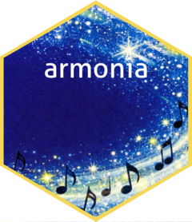

Write the dictionary workbook to disk
Source:R/write_dictionary_workbook.R
write_dictionary_workbook.RdInternal helper for dict_init(). Builds the full
workbook, the Instructions sheet, the styled Variable_Map_Wide sheet,
the Factor_Levels sheet (with embedded XLOOKUP formulas
resolving target_name), the Change_Log sheet, and the
Original_Metadata snapshot, then saves it to save_path.
Arguments
- wide_map
The wide variable map built by
dict_init().- factor_map
The candidate factor rows built by
mine_factors()(possibly zero rows).- match_by
Character string. The variable-alignment strategy used by
dict_init()("position"or"name"), used for the Instructions text and the initialChange_Logentry.- save_path
Character string. File path for the output
.xlsxdictionary.